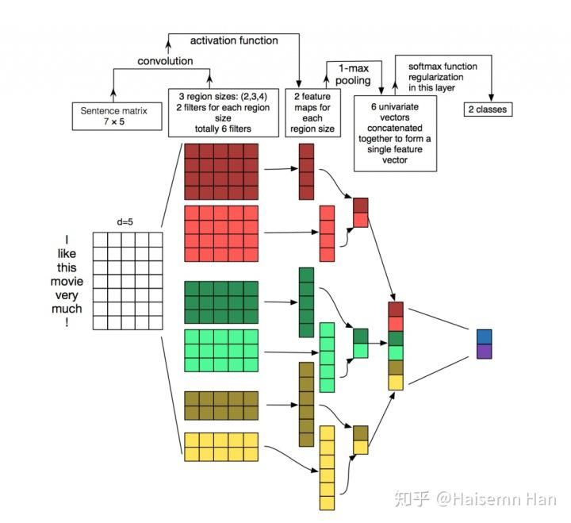
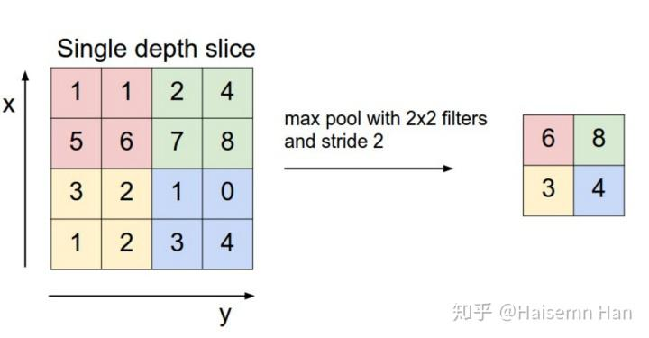
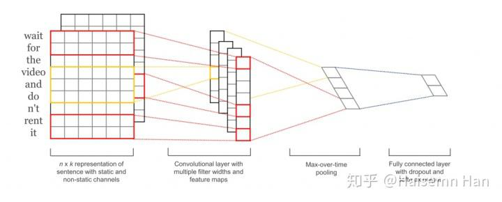

在NLP中理解CNN¶
原文: Understanding Convolutional Neural Networks for NLP
当我们听到卷积神经网络（CNN）的时候，我们通常会想到计算机视觉。CNN是图像分类的重大突破，并且是当前很多计算机视觉系统的核心，包括Facebook的自动进行图像标签已经无人汽车。
近年来，我们也开始将CNN运用到NLP的问题中，并且得到了一些有意思的结果。在这篇帖子中，我将总结CNN是什么，以及如何将CNN运用到NLP中。因为CNN在图像的例子下更好理解，所以我就以图像为例来开始讲解，然后再过渡到NLP吧。
什么是卷积？¶
对于我来说最好理解的方式就是，一个小框在矩阵上滑动，并通过一定的计算来得到一个新的矩阵。看图吧，这样更好理解！

这个滑动的小框一般被称为 kernel， filter，或者是feature detector。这里我们用的是3X3的小框，滑动时对应元素相乘，然后再相加。
你可能想知道为什么要这样做？那就看下面的例子呗，哈哈~
- 用上面小框的操作来模糊图片：
* 通过用一个像素与其相邻的像素作差来检测边（线）：

什么是CNN？¶
现在你知道了什么是卷积。那么什么是CNN呢。CNN本质上来说就是几个卷积层加上非线性函数，像ReLu或者tanh。在传统的神经网络中，我们将每个输入神经元与下一层连接。这个叫做全连接层或者仿射层。在CNN中，我们不那么做。相反，我们用输入层上的卷积来计算输出。这就导致了局部连接， 其中每个输入层的区域都是输出层的神经元连接在一起的。每层都使用了filter，通常会有成千上百的类似于上面有小框框的图那样的操作。还有一些东西叫做pooling(subsampling)层，但是我后面再介绍。在训练的过程中，一个CNN会基于任务自动地学习filters的值。例如，在图像分类中，一个CNN可以学会检测边，然后用边在第二层中去检测简单的形状，比如在高层中面部形状。最后一层就是一个使用这些高等特征的分类器。这里的计算有两方面值得注意：位置不变和合成(compositionality)。比如，你想知道是不是有一头大象在图片里面。因为你把你的分类器在整个图片上滑动，所以你并不关心哪里会有大象出现。在实践中，pooling通常会给你平移，旋转以及放缩的不变性，更多看后面哈~第二个关键的地方就是局部合成。每个filter把局部的低维特征合成为高维特征。这就是为什么CNN在计算机视觉里面这么厉害的原因。
那么，如何用到NLP呢？¶
与图像像素不同，对于绝大多数NLP的任务，输入都是矩阵形式的句子和文件。矩阵的每一行都对于这一个单词，但是也可能是一个字符。也就是，每一行都是一个表示一个单词的向量。通常来说，这些向量都是word embedding（低维表示），比如word2vec或者GloVe，但是他们也可能是one-hot向量（对应于一个词典）。对于一个10个单子句子用一个100维的embedding，我们可能需要10X100的matrix作为我们的输入。这就是我们的“image”。
在视觉中，我们的filter经过图像的每一小块，但是在NLP中，我们通常使用filter滑过整个矩阵的整个行(words)。因此，我们filter的宽度通常是与输入矩阵的宽度相同。高度，或者说区域大小是可以变动的，但是25个单词上的滑动框在这个时候是一定的。把上面所有的都放在一起，一个NLP下的CNN是下图这样子的。

计算机视觉的直觉是什么？局部不变性以及局部合成是的对于图像有直观的感觉，但是对于NLP并没有这样很强的直觉。你可能很关心句子中哪里会有一个单词出现。像素彼此很靠近的时候可能会有相关的语义，但是相同通常对于单词来说不是一回事。在很多语言中，部分短语可以被分割几个其他的单词。合成方面也不是那么明显。但是，单词很明显都是用同样的方式组合的，比如形容词修饰名词，单数这个能起多大作用呢？在高维表示中的意义也并没有计算机视觉中那么显然了。
说了这么多，似乎CNN并不适合NLP哎。但是RNN看起来似乎更加让人有感觉。它就想我们如何处理语言一样，至少像我们思考的那样：有顺序的从左到右读取句子。很幸运，CNN还是可以用的。毕竟还是那句老话：“所有模型都是错的，但是有一些还是可以用的。”最终表现来看，CNN还是表现得非常好的。简单的Bag of Word模型看来要退位了，因为Bag of Word模型很明显是一个过度简化了的模型，而且假设也不对，但是它当了老大很多年了，而且也还是有一些非常好的结果的。
一个关于CNN的很大的争议就是他太快了，非常非常快。卷积是计算机图形学的一个和兴并且应用于GPU的硬件水平上。与n-gram这些相比，CNN在表示方面也是非常有效的。在词典很大的情况下，计算任何超过3-grams的东西可能会变得非常昂贵。甚至Google也不计算超过5-grams的东西。卷积filters会自动地学习很好的表示，而且不需要表示出整个词典。所以，让filter的宽度超过5是完全合理的。我更倾向于认为，很多在第一层学习到的filter通常会抓住一些很相似的特征，但是表示起来更加紧凑。
CNN超参数¶
在解释CNN如何适用于NLP之前，我们先解释需要做的几个参数选择，当你要建立一个CNN的时候。有可能，这会帮你更好地理解这个领域的文献。
- 窄的vs宽的卷积
当我解释卷积的时候，我忽略了一丢丢关于如何应用filter的东西。在矩阵的中心使用一个3X3的filter是work的，但是如果在边上呢？这时候我们怎么对矩阵的第一个元素用filter？你可以使用Zero-padding。所有在矩阵外面的元素都取作0。通过这样做，我们就可以用filter啦，并且得到一个更大的或者等大的输出。使用zero-padding也被称为宽卷积，不使用的话就称为窄卷积。你可以发现为什么宽卷积是有用的，甚至是必要的，当你有一个相对于输入大小来说很大的filter时。一般来说，输出大小的公式是
- 步长
另外一个卷积的超参数就是步长大小，是指每次filter挪动多远。在所有上面的例子中，步长都是1，并且那些filter都是重合的。一个更大步长可以使得filter使用的次数更少以及小的输出。在文献中，通常步长都是1，但是一个更大的步长可以使得你的模型的表现更像RNN，i.e.像tree。
- Pooling层
CNN中一个关键的部分就是pooling层，通常用在卷积层后面。pooling层重采样他们的输入。最通常的方式去pooling就是对每个filter的结果用a_max算子。你没有必要去pool整个矩阵，你只需要pool那个小框框。比如下面这个max pooling对于一个2X2的小框(在NLP中，我们通常会pool over整个输出，然后对于每个filter输出一个数)：

为什么要pooling？有很多原因。pooling的一个特性就是它提供了一个固定大小的输出矩阵，这通常对于分类来说是必要的。例如，如果你有1000个filters并且对每个filters都使用max pooling，那么久会得到一个1000维的输出，不管你的filter以及输入的大小。这就使得你可以使用长度变化的句子以及尺寸变化的filters，但是总是会输出相同维度的东西给分类器。
Pooling也能够减少输出的维度，但是也有希望保存最突出的信息。你可想象一下每个分类器都用来探测一个特定的特征，比如检测是否句子中有否定，类似“不惊奇”。如果这个短语出现在句子的某个地方，呢么使用filterto那个地方的结果就是产生一个很大的值，但是他的周围的值都很小。通过使用max算子，你可以保存这些信息关于是否特征会出现在句子里面，但是你也会失去一些信息，比如它出现的位置。但是位置信息有用吗？是的，很有用，它就类似与bag of n-grams模型做的那样。你失去了全部关于位置的信息，但是你通过filter保存了局部的信息，比如是“not amazing”而不是“amazing not”
在图像识别中，pooling也提供了基本的平移以及旋转不变性。当你在一个区域上用pooling
的时候，这个输出也还是会近似地相同，即使你平移或者先转这个图像几个像素点，因为max算子会得出相同的值。
- channel
最后一个概念就是channels。channels是对输入数据的不同视角。比如，在图像识别中，你通常会有RGB channels。 你能够在这些channels上使用卷积。在NLP中，你可以想象有各种各样的channels：对于不同的word embeddings(Word2Vec, GloVe), 你可以不同的channels。或者，你可以有一个channel对于在不同语言中的相同的句子。
NLP中的CNN¶
现在，我们看一下CNN在NLP中的应用。我会尽力地去总结一些研究成果。
给CNN最适合的任务就是分类，比如Sentiment Analysis, Spam Detection, 或者Topic Categorization. 卷积和Pooling算子会丢失一些局部的位置信息，从而使得句子标签变成了Part of Speech标签或者Entity提取变得更加困难对于纯粹的CNN框架。
[1]评估一个CNN框架在各种分类数据上，绝大多数都是Sentiment Analysis and Topic Categorization。CNN框架都表现得非常好。更神奇的是，在这篇paper中的网络是非常的简单，并且也是它很powerful的原因。输入层是一个由串联word2vec word filter组成的句子。然后紧接着是一个带有多重filter的卷积层，然后是一个max-pooling层，最后是一个softmax分类器。这篇论文也实现了两种channels：static和dynamic word embeddings， 其中一种是会在训练中进行调整的，而另一种不会。[2]提出了一种类似的但是跟家复杂的神经网络结构。[6]另外还增加了一层来进行“语义聚类”。

[4]从头开始训练CNN，没有使用预先训练好的word vector，像Word2Vec， GloVe。它直接把卷积运用到one-hot向量上。这个作则也提出了一个空间有效的bag-of-words-like的表示来表示输入数据。，从而减少神经网络中需要学习的参数。在[5]中，作者使用另外一种非监督式的"region embedding"，也就是通过使用CNN预测文本中的内容来学习。这些论文中的方法似乎对于长文本都是有效的，但是他们对于短文本的表现(像tweets)并不是很好。直觉上来看，这是有道理的，因为使用预先训练好的word embedding来对短文本进行建模将会产生更多的误差，相对于长文本来说。
构建一个CNN框架意味着有很多差参数要选，输入的表示(Word2Vec, GloVe, one-hot), 卷积filter的数量以及大小，pooling策略(max, average)， 以及激活函数(ReLu, tanh). [7]进行了一个实践评估关于CNN中那些参数变化的影响，并且研究了他们对于CNN表现以及结果的波动的影响。如果你想使用你自己的CNN来进行文本分类，使用这篇论文的结果作为一个触发点时不错的。其中一些有点意思的结果，比如 max-pooling 优于average-pooling, 理想的filter大小是很重要的，正则化在NLP中看起来也不会有很大的作用。
[8]探讨了CNN在relationship提取以及relationship分类中的应用。除了word vectors，作者使用了word与感兴趣的entity的相对位置作为一个卷积层的输入。这个模型假定了enetities的位置是给定的，并且每个输入都存在一个relationship。[9]和[10]讨论了类似的模型。
另一个有意思的应用可以被找到在[11]和[12]中。这些paper是来自Microsoft reasearch. 这些papers描述了如何去学习句子的语义表示，这个可以用做information retrieval. paper中的例子包括推荐可能的文件给使用者，基于他们正在读的东西。这个句子表示被训练是基于搜索引擎log数据。
绝大多数的CNN框架学习words和句子的embedding（低维表示）作为许梿的一部分。并不是所有的paper都研究这个训练过程或者研究这个embedding是多么的有意义。[13]展示了一个CNN框架来给Facebook帖子预测话题标签，而且同时产生有意义的单词和句子的embedding。 这些学到的embedding然后成功地用在了另一个任务上面：推荐潜在的文档给读者，基于他们点击数据。
- Character-Level CNNs
到目前为止，所有的展示的模型都是基于words的。但是也有一些研究直接把CNN用在字符上面。[14]学习了character-level embedding，把他们和预先训练好的embedding结合在一起，然后使用CNN标签PoS。[15][16]探讨了CNN的使用来直接从字符中学习，不需要任何预先训练好的embedding。值得注意的是，作者用来一个相对深的神经网络(9层)， 并且把它用在了sentiment anslysis和text categorization上面。结果表明直接从字符输入来学习在大数据集(上百万)上式表现得非常好的。但是在小数据集(几百个，几千个)上表现还不如简单模型。[17]探索了使用字符型CNN的输出作为LSTM每个时间点的输入。
令人惊奇的是，基本上所有的paper都是近1-2年内出版的。很明显，之前是一定出现了关于CNN在NLP中应用的重要工作。
Paper References¶
- [1] Kim, Y. (2014). Convolutional Neural Networks for Sentence Classification. Proceedings of the 2014 Conference on Empirical Methods in Natural Language Processing (EMNLP 2014), 1746–1751.
- [2] Kalchbrenner, N., Grefenstette, E., & Blunsom, P. (2014). A Convolutional Neural Network for Modelling Sentences. Acl, 655–665.
- [3] Santos, C. N. dos, & Gatti, M. (2014). Deep Convolutional Neural Networks for Sentiment Analysis of Short Texts. In COLING-2014 (pp. 69–78).
- [4] Johnson, R., & Zhang, T. (2015). Effective Use of Word Order for Text Categorization with Convolutional Neural Networks. To Appear: NAACL-2015, (2011).
- [5] Johnson, R., & Zhang, T. (2015). Semi-supervised Convolutional Neural Networks for Text Categorization via Region Embedding.
- [6] Wang, P., Xu, J., Xu, B., Liu, C., Zhang, H., Wang, F., & Hao, H. (2015). Semantic Clustering and Convolutional Neural Network for Short Text Categorization. Proceedings ACL 2015, 352–357.
- [7] Zhang, Y., & Wallace, B. (2015). A Sensitivity Analysis of (and Practitioners’ Guide to) Convolutional Neural Networks for Sentence Classification,
- [8] Nguyen, T. H., & Grishman, R. (2015). Relation Extraction: Perspective from Convolutional Neural Networks. Workshop on Vector Modeling for NLP, 39–48.
- [9] Sun, Y., Lin, L., Tang, D., Yang, N., Ji, Z., & Wang, X. (2015). Modeling Mention , Context and Entity with Neural Networks for Entity Disambiguation, (Ijcai), 1333–1339.
- [10] Zeng, D., Liu, K., Lai, S., Zhou, G., & Zhao, J. (2014). Relation Classification via Convolutional Deep Neural Network. Coling, (2011), 2335–2344.
- [11] Gao, J., Pantel, P., Gamon, M., He, X., & Deng, L. (2014). Modeling Interestingness with Deep Neural Networks.
- [12] Shen, Y., He, X., Gao, J., Deng, L., & Mesnil, G. (2014). A Latent Semantic Model with Convolutional-Pooling Structure for Information Retrieval. Proceedings of the 23rd ACM International Conference on Conference on Information and Knowledge Management – CIKM ’14, 101–110.
- [13] Weston, J., & Adams, K. (2014). # T AG S PACE : Semantic Embeddings from Hashtags, 1822–1827.
- [14] Santos, C., & Zadrozny, B. (2014). Learning Character-level Representations for Part-of-Speech Tagging. Proceedings of the 31st International Conference on Machine Learning, ICML-14(2011), 1818–1826.
- [15] Zhang, X., Zhao, J., & LeCun, Y. (2015). Character-level Convolutional Networks for Text Classification, 1–9.
- [16] Zhang, X., & LeCun, Y. (2015). Text Understanding from Scratch. arXiv E-Prints, 3, 011102.
- [17] Kim, Y., Jernite, Y., Sontag, D., & Rush, A. M. (2015). Character-Aware Neural Language Models.
凡本网注明"来源：XXX "的文/图/视频等稿件，本网转载出于传递更多信息之目的，并不意味着赞同其观点或证实其内容的真实性。如涉及作品内容、版权和其它问题，请与本网联系，我们将在第一时间删除内容！
作者: 立足当下
来源： https://zhuanlan.zhihu.com/p/46531725